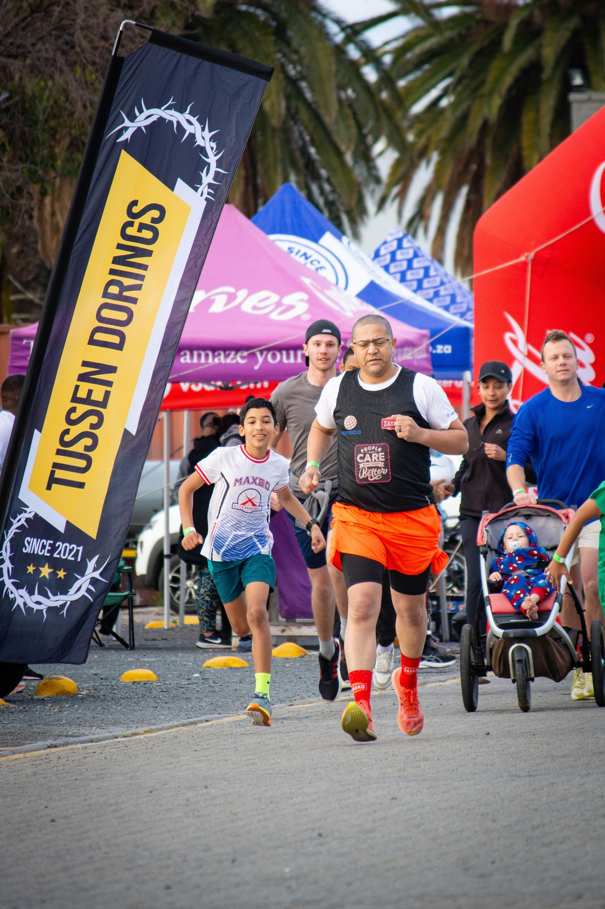

Every stride is a story. Every kilometre, a step towards hope. Run with us — for yourself, for your community, for those still finding their way through the thorns.

The Tussen Dorings Fun Run isn't just about fitness — it's a declaration that our community stands together. Every rand raised funds our outreach, our stories, and our ability to say to one more person: you are not alone.
Your registration helps us find, film, and share more stories of hope every single week.
Running together builds bonds. The Western Cape deserves spaces where people feel seen and heard.
One event, one run, one story at a time — we are changing the narrative of despair in our communities.
The Tussen Dorings Fun Run was created to be a living celebration of the human spirit. Whether you walk, jog, or run — your presence is a powerful statement that hope is not dead in our streets.
All proceeds directly support Tussen Dorings' community outreach work in and around Worcester, Western Cape.
Times are indicative and will be confirmed closer to the event. Follow our Facebook page for updates.
Collect your race number and welcome pack at the registration table. Early birds get the best parking!
Group warm-up session for all participants. Let's get those legs ready and spirits high.
The 10km runners set off first, followed by the 5km family group. Cheering encouraged!
Finisher medals for all. Light refreshments provided. Top finishers receive special recognition.
A short programme featuring live testimony and the spirit of Tussen Dorings in action.
Thank you for running with hope. Stay connected on Facebook and YouTube.
Worcester, Western Cape, South Africa — Exact venue to be announced. Follow us on Facebook for updates.
Spaces are limited. Register now to guarantee your place in the Tussen Dorings Fun Run 2026 and run your own story of hope.
Fill in your details below. Registration is confirmed upon payment.
Tussen Dorings is committed to the responsible, ethical collection and use of personal information in accordance with South African law.
We collect your name, email address, phone number, and health information solely for the purpose of event registration and participant safety. Your data is never sold or shared with third parties for marketing. Data is stored securely and deleted within 12 months after the event. You have the right to access, correct, or request deletion of your information at any time by contacting us on Facebook.
Tussen Dorings complies fully with South Africa's Protection of Personal Information Act (POPIA), No. 4 of 2013. We process personal information lawfully, with your explicit consent, and only for the specific purpose of event registration. As a data subject, you have the right to be notified of data processing, to access your information, and to raise an objection with the Information Regulator of South Africa.
We want to be straightforward and fair. Here's our policy:
More than 14 days before the event: 50% refund issued.
7–14 days before the event: No cash refund, but your registration can be transferred to another participant — contact us on Facebook to arrange.
Within 7 days of the event: No refund. Registration is non-transferable.
Event cancellation by Tussen Dorings: Full refund issued within 14 business days.
To request a refund, message us on Facebook with your registration name and email.
By registering for the Tussen Dorings Fun Run, participants acknowledge and agree to the following: (1) Participation is voluntary and at the participant's own risk. Tussen Dorings NPO cannot be held liable for any injury, illness, or loss during the event. (2) Participants confirm they are medically fit to participate and will inform the organisers of any relevant medical conditions prior to the event. (3) Participants grant Tussen Dorings the right to use photographs or videos taken at the event for non-commercial promotional purposes (social media, website, print). You may opt out by notifying us in writing before the event. (4) Participants must abide by the rules of the event and show respect to all volunteers, organisers, and fellow participants. (5) Children under 16 must be accompanied by a registered adult participant.